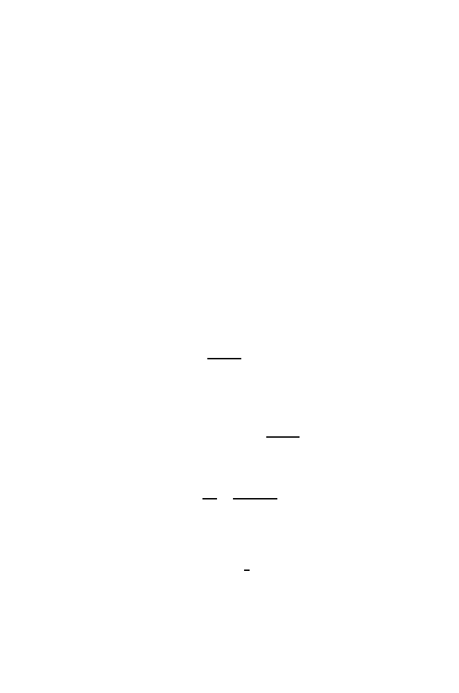

378
13 Genetic Variation in Populations
13.4.1 Relationship Between Recombination and Distance
We first develop an expression that relates the probability of recombination
to distance. Two crossover events are diagrammed in Fig. 13.2. Crossover I
involves a single genetic exchange in interval
x
and joins the left segment of
the top chromosome to the right segment of the bottom chromosome and vice
versa. An odd number of crossover events anywhere in region
x
will produce
products that are recombinant for markers to the left and right of region
x
, in
this case alleles of genes
A
and
D
. Crossover II involves two genetic exchanges
in region
x
. Even numbers of exchanges may generate products recombinant
for genes that lie to the left (or right) of
x
and genes lying
within
x
, but
they do not generate products recombinant for genes that
flank
region
x
. We
are interested in how frequently haplotypes are shuffled by genetic exchange.
The
recombination fraction
r
is the probability that alleles at two loci on
a chromatid come from
different
parental chromosomes. The recombination
fraction, which is used to measure genetic map distance, is related to
m
, the
expected number of crossovers between the two loci.
The simplest model relating
r
to
m
was first proposed by Haldane. He as-
sumed that the crossovers occurring between two loci on a given chromatid fol-
low a Poisson process with mean
m
. In particular, the number
C
of crossovers
has a Poisson distribution, with
P
(
C
=
k
) =
m
k
e
−
m
k
!
, k
= 0
,
1
, . . . .
As we can see from Fig. 13.2, odd numbers of crossovers lead to recombination
between loci on both sides of
x
(
A
and
D
), and even numbers of crossovers
do not. Thus the relevant probability is
r
=
P
(
C
is odd) =
k
odd
m
k
e
−
m
k
!
.
(13.10)
The sum on the right-hand side of (13.10) can be expressed as
k
odd
m
k
k
!
=
e
m
−
e
−
m
2
.
(This can be verified by performing series expansions of the exponential terms
on the righthand side.) Therefore,
r
=
P
(
C
is odd) =
1
2
(1
−
e
−
2
m
)
.
(13.11)
This is the Haldane mapping function, which relates recombination frequency
(probability) with map distance,
m
. When
m
is small, we can neglect terms of
order
m
2
and higher in a series expansion of the exponential term in (13.11) to
see that for short distances
r
≈
m.
Note that as
m
gets very large in (13.11),